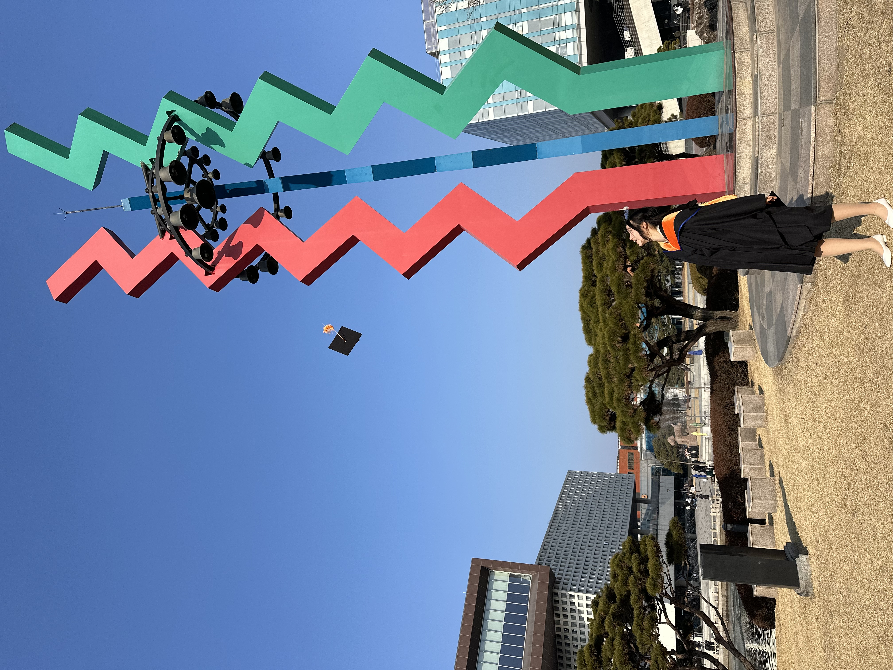
I am a Master’s graduate in Chemical and Biomolecular Engineering with research experience in PLGA-PEG nanoparticle-based drug delivery systems for dual metabolic inhibition in cancer therapy. Proficient in nanoparticle characterization (DLS, TEM, HPLC) and therapeutic evaluation in cellular and in vivo models. Building on this experimental foundation, I aim to advance toward smart, data-driven, and AI-integrated drug delivery platforms for improved diagnosis, targeted therapy, and preventive strategies, combining biological insights with engineering approaches.
Keyword of Interest organ-on-chip, sensor, microrobotics, bio-integrated systems, soft robotics
Topic: Development of dual metabolic pathway inhibitors delivered via PLGA-PEG nanoparticles to selectively target hepatocellular carcinoma while sparing normal cells. Object: Overcome tumor metabolic plasticity by inhibiting glycolysis and oxidative phosphorylation using nanoparticles designed for long circulation, liver accumulation, and tumor-selective delivery via the EPR effect.
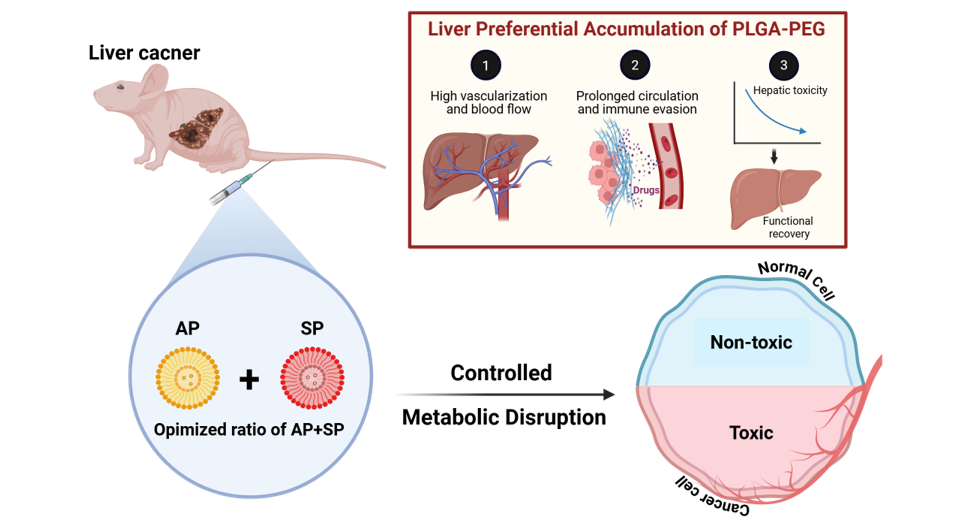
Keyword nanomedicine, dual metabolic inhibition, hepatocellular carcinoma, PLGA-PEG nanoparticles, selective toxicity, EPR effect
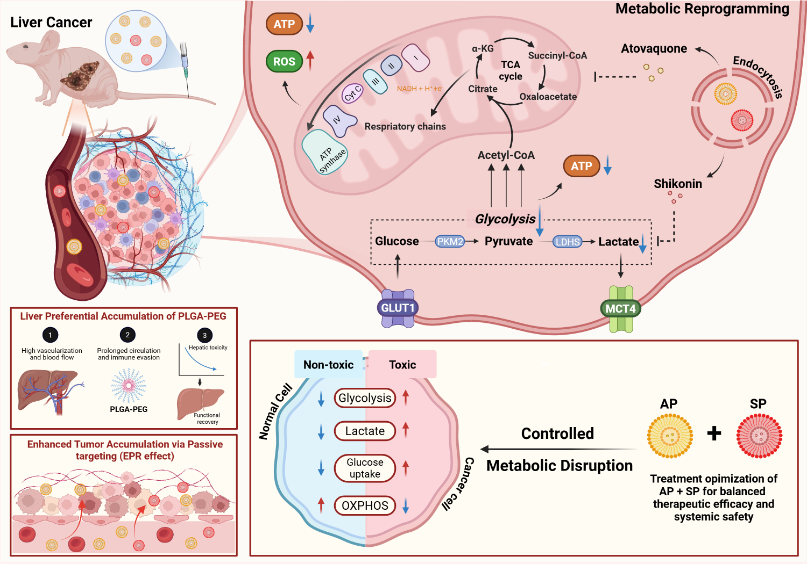
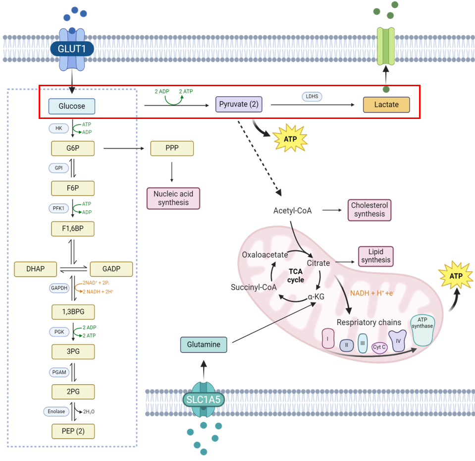
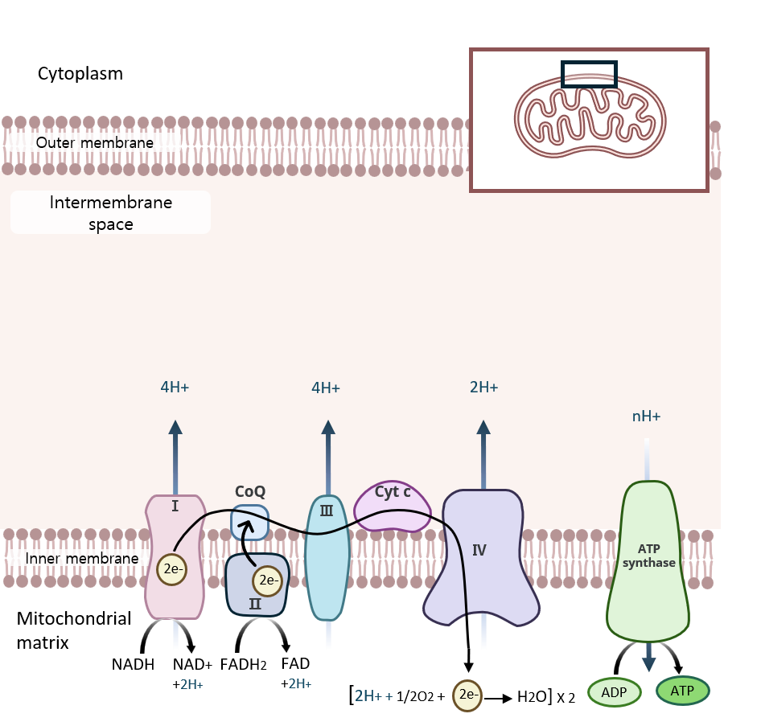
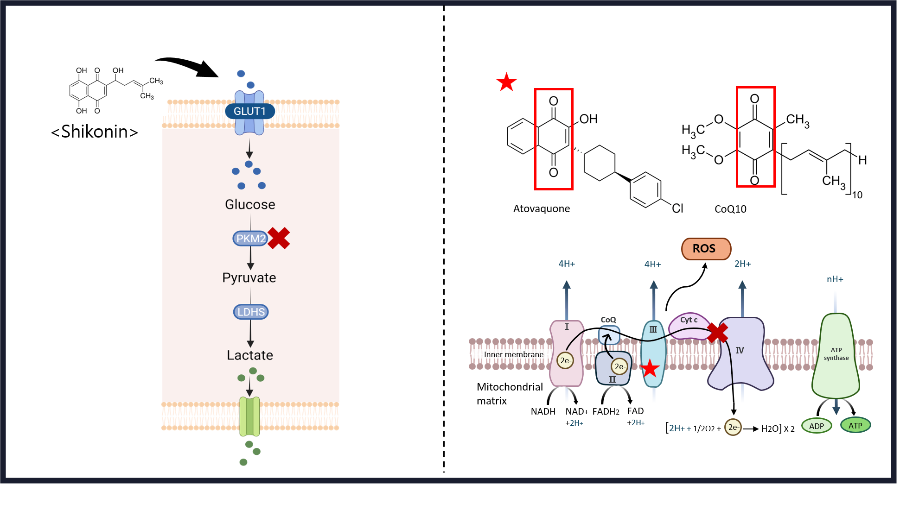
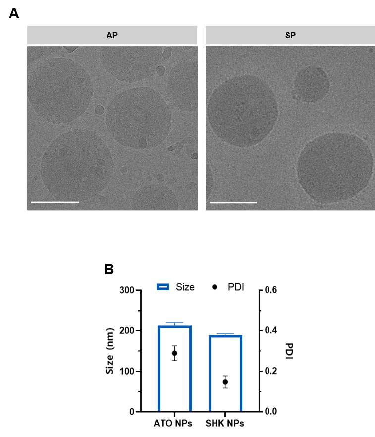
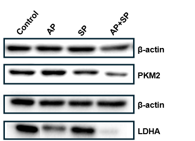
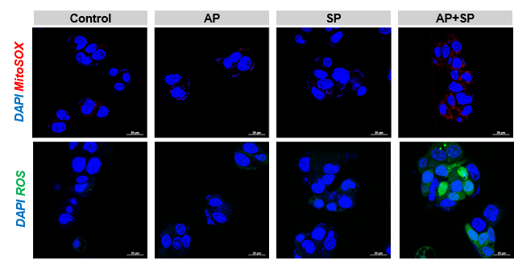
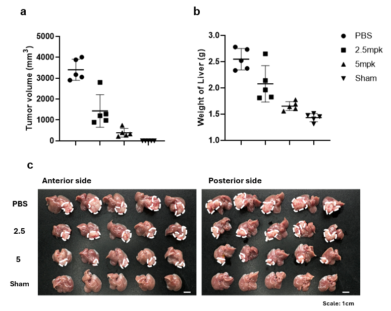
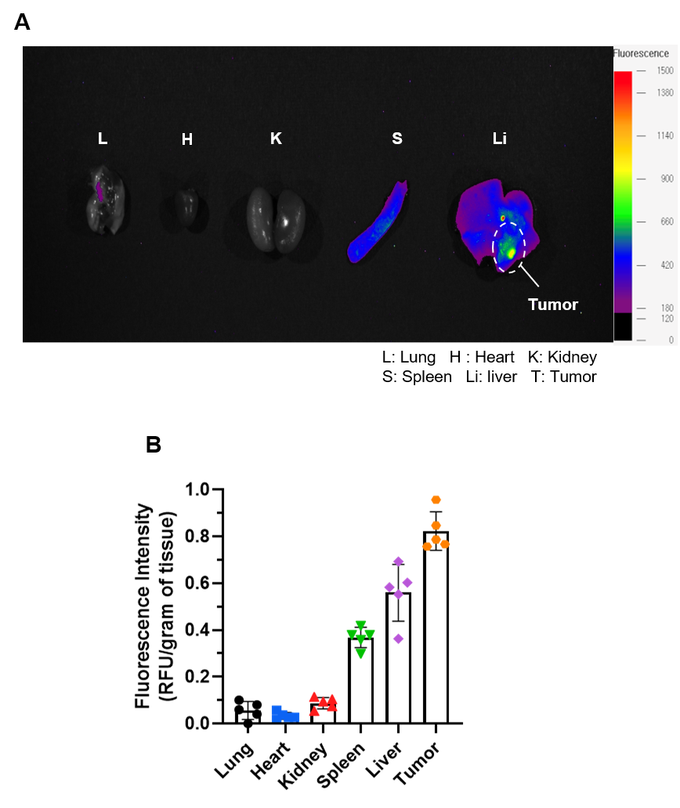
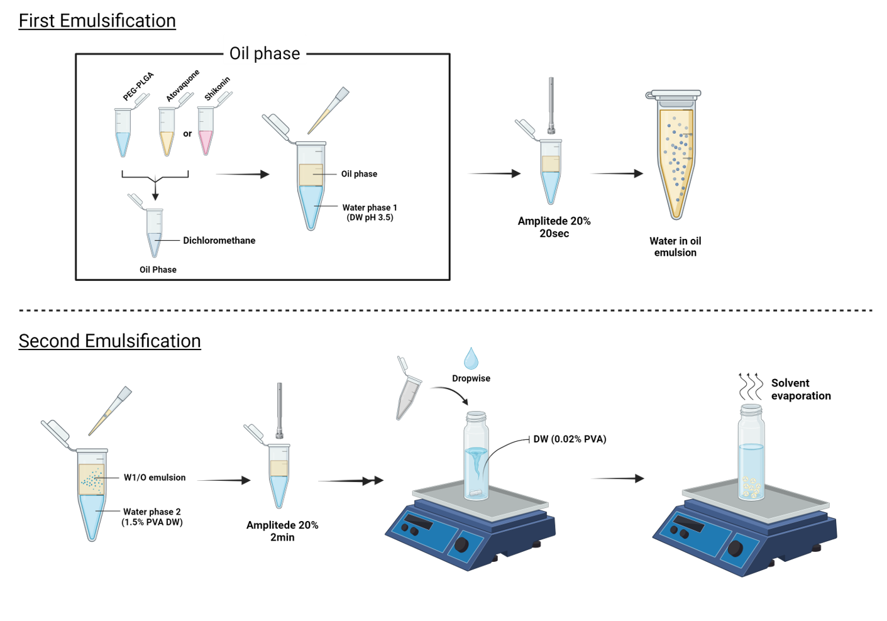